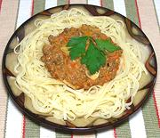

|
Bolognese SauceItalian, North | ||||
| Makes: Effort: Sched: DoAhead: |
4 cups *** 3-1/2 hrs Yes |
This is a classic Italian meat sauce used for lasagna and other famous pasta dishes - shown here with linguini. Sauces with milk and/or cream are typical of northern Italy. | |||
|
|
1 1-1/2 4 4 2 5 1-1/2 2 1 4 2-1/2 2 1/2 1/2 1/2 1/4 2 1/8 1/2 1/2 |
oz oz oz oz oz oz oz oz can oz oz T c c t t t c c |
Bacon, smoked Prosciutto Beef, lean Veal, lean Pork, lean Onion white Carrot Celery Tomatoes 28oz Mushrooms Chicken Livers Butter Stock White Wine, dry Salt Pepper Cloves Nutmeg fresh Water Cream, heavy |
As with many traditional recipes there are many variations, particularly in the mix of the meats. This recipe makes a lot, but it's kind of a production so you want to make it when you need a lot. Prep - (1-1/4 hour)
|